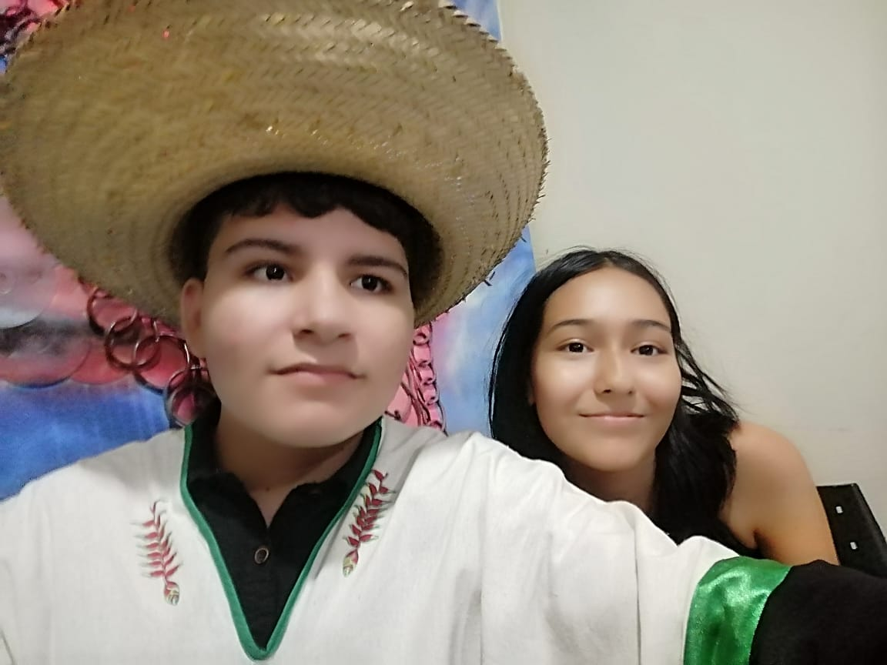

I know a lot of people (It's a lie, I don't know many people), but I have two best friends who are the best of all .
Their names are Melani Navia Yañez and Kiara Zamira Coca Jare (I think that her last name is so funny).
Melani likes to go to the gym, she's very strong and knows boxing. She also likes to listen to music while she washes the dishes. She knows how to play the guitar, but she doesn't have a guitar.
She shows me many artists, such as: José José, Laufey, Mon Laferte, David Me Estás Matando, K-pop and many Asian artists. She also calls me "Migajero", but I'm not a migajero (I'm a different person today).
We usually call each other when we have time to talk about different things, such as our lives, our problems, our future, and many more things. I love her so much, she's like a sister to me.
Sometimes I behave badly with her. I usually tease her, I call her "Nusita", "Black", "Night" and other things, but she doesn't care because she knows I love her very much.
We have an interesting history. We met in a guitar course at UAB during vacation. We didn't talk too much, because I've always been a little shy. She was friendly with me and we started to talk about the guitar and music.
After that, we started to talk more and more, we started to share our problems and our lives. We started to share our music and our interests.
Until our performance, she gave me her Instagram and I wrote in my phone "melani navia". After the performance and I went back to my house, I wrote her name on Instagram, but I couldn't find her. I had no idea which was her username and the right profile. I lost her at that moment.
After one year, I went to an event and it was boring, but I saw how the governor gave cellphones and other things that I wanted. I decided to move to the front and one person greeted me, I didn't know who that person was, that person, I didn't remember her, but she was Melani. I was surprised, I didn't know that she was there. We started to talk and we started to share our life again.
After the event ended, I asked for her instagram again. This time, she showed me her right profile and I wrote it in my phone. I was so happy and we stared to talked again.
The only photo that I have with her is this one:
We took this until we had a performance in the UAB, we were so nervous, but we did it.
Ella es alguien amable y medio chinchosa conmigo, pero la quiero mucho . Aunque aveces me molesta que me este fastidiando un poco ya que soy alguien un poco impaciente y que disfruta un poco del silencio.
Pese a que somos personas opuestas en algunas áreas, nos llevamos bien, con algunos malentendidos, pero bien a fin de cuentas.
Zamira es alguien imperactiva que cuesta cansarla para tenerla quieta en un solo lugar, además de ser alguien procrastinadora y floja en el colegio. Siendo que me pide que la ayude siempre para que tenga buenas notas, pese a que va encontra de mis principios en algunos casos, pero la ayudo.
Nos conocimos en el colegio, en 4to de secundaria para ser más exactos, no le dí importancia a ella al inicio, por que estaba concentrado en mi mismo y de adaptarme al nuevo entorno en el cual estaba. No interactuabamos mucho, ya que normalemente me juntaba con mis amigos que hice los primeros días (ella 2 días después de que yo llegué al colegio).
Nos conocimos por tener amigos en común, aunque ella normalmente hablaba solo con mujeres y no me metia en eso, de ahí en parte es que me dice chismoso. Ósea, parte de lo que son mis acciones y mis actitudes han sido inculcadas por Zamira y Melani, chimoso y migajero, pero no me importa, porque las quiero mucho.
No supe cuando ni en que momento, pero ya eramos amigos y para aún más sorpresa, mejores amigos. En ese punto sinceramente no entendi nada, asi que hice lo que normalmente hago, no le doy importancia y sigo con mi vida.

Pese a que aveces sea una mala persona y que las moleste mucho, siempre estaré para apoyarlas y ayudarlas en lo que pueda, pese que no sea mucho, es algo que igual tiene importancia.
Las quiero mucho, Melani y Zamira, son las mejores amigas que tengo y siempre estaré para apoyarlas en lo que pueda. Puede que no se los diga aveces, ya sea por que no es algo que haria o por ego aveces, pero son las mejores amigas que puedo tener, además de ser amables y ser beutiful girls (uso el inglés para expresarme mejor, me da verguenza decirlo). Gracias por ser mis mejores amigas, las aprecio y quiero mucho .